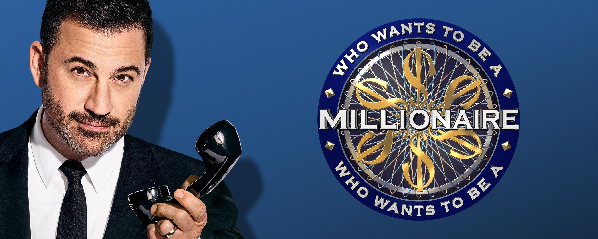

Who Wants To Be A Millionaire USA
Who Wants to Be a Millionaire er et populært TV-spillshow hvor deltaker ne kan vinne store pengepremier ved å svare på spørsmål i ulike kategorier. Spillet er basert på en britisk originalversjon og har blitt tilpasset og sendt i mange land over hele verden. Konseptet har også blitt tilpasset til en rekke dig itale plattformer, inkludert mobilapper og nettspill. I spillet må spillerne svare på sp ørsmål av økende vanskelighetsgrad for å kunne nå det øverste premienivået på én million kroner.